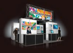
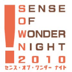

※写真はイメージです
開催！アジア市場に熱心なゲーム産業首脳による
アジア・ゲーム・ビジネス・サミット
ゲーム産業の主要企業のキーマンを集め、講演やパネルディスカッションをはじめ、プレスカンファレンスなどで総合的に構成。今後の市場や技術の動向、各社の方向性などについて展望します。
国際ビジネス相談コーナー
国際ビジネス相談コーナーでは、日本貿易振興機構（JETRO）やアジア、欧米のビジネスコーディネーターなどの協力により、出展企業の皆様が各国とのゲームビジネスを円滑に進めるための橋渡しをするコーナーです。
刷新！TGSフォーラム2010
TGSフォーラムのセッションをリニューアル。
アジアNo.1のゲームビジネス・カンファレンスを目指します。
ゲームビジネスの総合カンファレンスとして高く評価されるTGSフォーラム。日経BP社の第一線のジャーナリストをモデレータに、ゲーム産業のキーマンの方々に講師となっていただいております。TGS2010では、アジアを中心とした国際化路線を重視したセッションと、ＩＴやエレクトロニクス技術が今後のゲーム産業に及ぼす影響に関するセッションを追加する予定です。
- CESA会員で、これまで東京ゲームショウ未出展の企業・団体限定！
- お試しプラン
通常出展料金の10％OFF - ※詳細については事務局にお問い合わせください。
- 4～9小間で出展の企業・団体に。
- 1ランク上でリーズナブルな
充実パッケージブースプラン - 低コストの「充実パッケージブース」設定プランをご利用いただけます。 
※「充実パッケージブース」の詳細については、別途資料をご用意しております。事務局までお問い合わせください。
※写真はイメージです

「SENSE OF WONDER NIGHT（SOWN）」は、ゲーム開発者にスポットライトを当て、“見た瞬間、コンセプトを聞いた瞬間に、誰もがはっと、自分の世界が何か変わるような感覚”＝「センス・オブ・ワンダー」を引き起こすようなゲームのアイデアを発掘し、東京ゲームショウにてプレゼンテーションの機会を提供するものです。
SOWNでは開発者のアイデアをサポートするための協賛メニューをご用意しています。
2010年、SOWNはさらなる価値向上を目的に、
① 展示会場内にSOWNパビリオンを新設 ② カテゴリーにモバイル部門を新設 など、新たな施策を展開します。
※SOWN協賛メニューの詳細については、事務局までお問い合わせください。